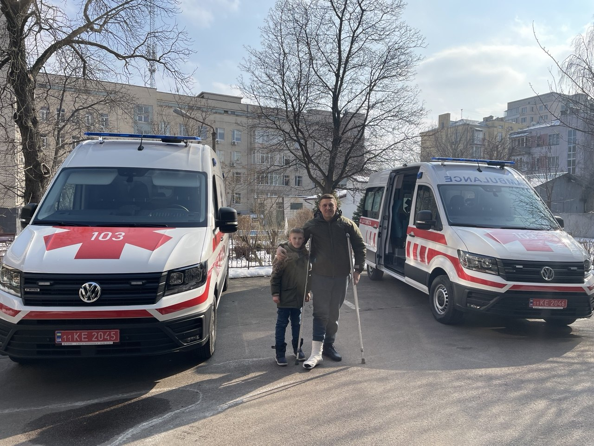

Фонд відкритого співробітництва передав нові сучасні машини швидкої допомоги для потреб військового госпіталю.
Передані автомобілі посилять можливості військового госпіталю оперативно надавати медичну допомогу в умовах підвищеного навантаження під час війни.
Віталій Смолін, директор Фонду відкритого співробітництва, особисто вручив ключі від автомобілів та подякував медикам за щоденну роботу у складних умовах воєнного часу.
Підтримка медичних закладів та системи екстреної допомоги є одним із пріоритетних напрямів діяльності Фонду. Організація продовжує працювати над залученням допомоги для медичних установ, реабілітаційних програм і територіальних громад України.